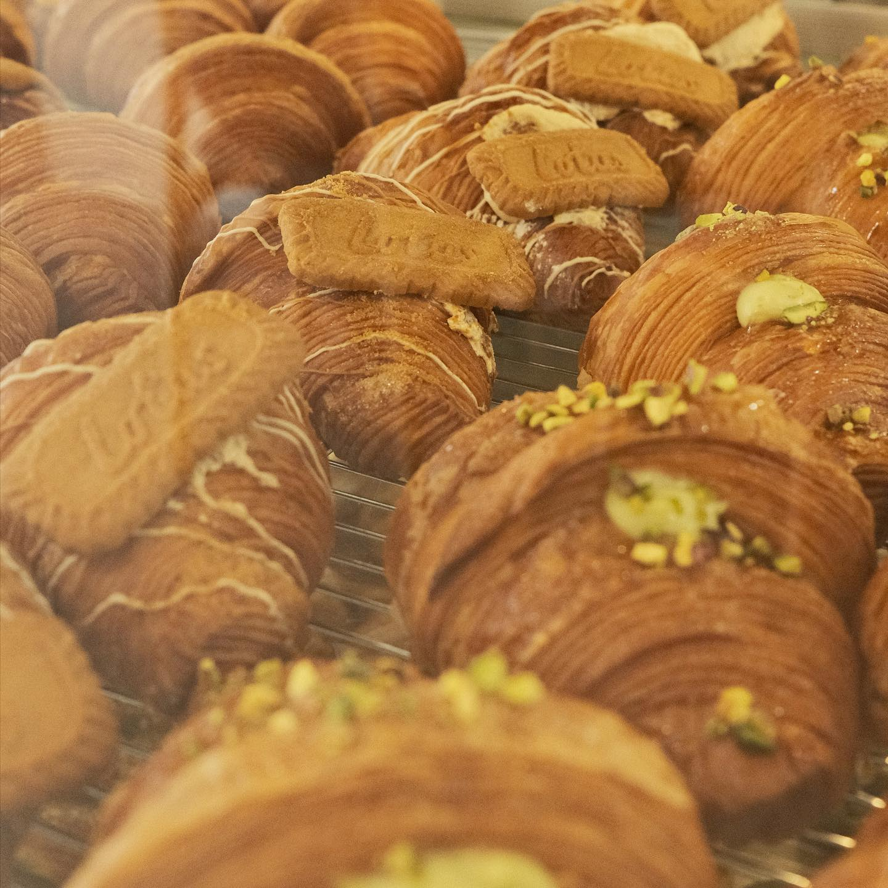
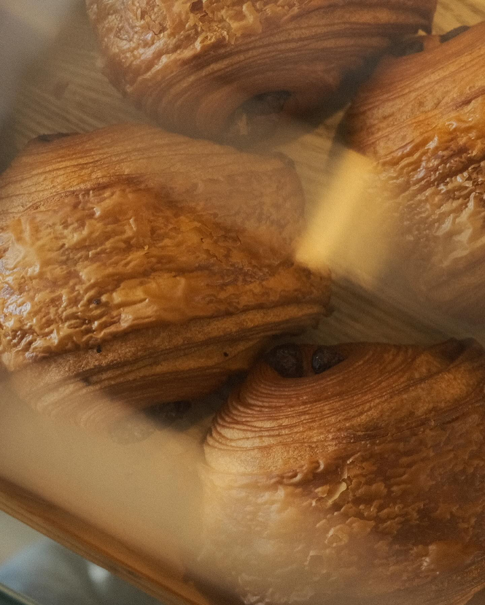

At La Croissanterie , we believe in more than just baking we believe in creating an experience. Every croissant we make is a symbol of our passion for quality, tradition, and the art of French pastry. Each layer is carefully crafted to ensure a light, buttery texture that offers a truly memorable taste with every bite.
Our croissants are a reflection of our commitment to authenticity. We use traditional French techniques passed down through generations, ensuring that each croissant is folded and baked to perfection. From the precise lamination of the dough to the final golden bake, we maintain the highest standards in every step.
Quality is at the heart of everything we do. We use only the finest ingredients, including rich, creamy butter and the freshest local fillings. Every bite of a La Croissanterie croissant is a testament to the care and attention we put into every batch, ensuring that each one meets the highest standards of flavor and texture.
At La Croissanterie, we don't just bake croissants, we create indulgent moments for you to enjoy. Whether you're starting your morning with a simple, buttery croissant or treating yourself to one of our specialty flavors, every croissant is made to bring joy to your day.

Our café is more than just a place to buy pastries — it’s a space designed for comfort and relaxation. With a cozy, inviting ambiance, La Croissanterie provides a perfect escape whether you’re enjoying a quiet moment with coffee or sharing a pastry with friends. Each visit is an opportunity to experience a slice of French elegance.
We invite you to savor the luxury of traditional French baking with a modern twist. At La Croissanterie, every bite is a celebration of indulgence, and every pastry is crafted with love. Welcome to a world where passion meets perfection, welcome to La Croissanterie.